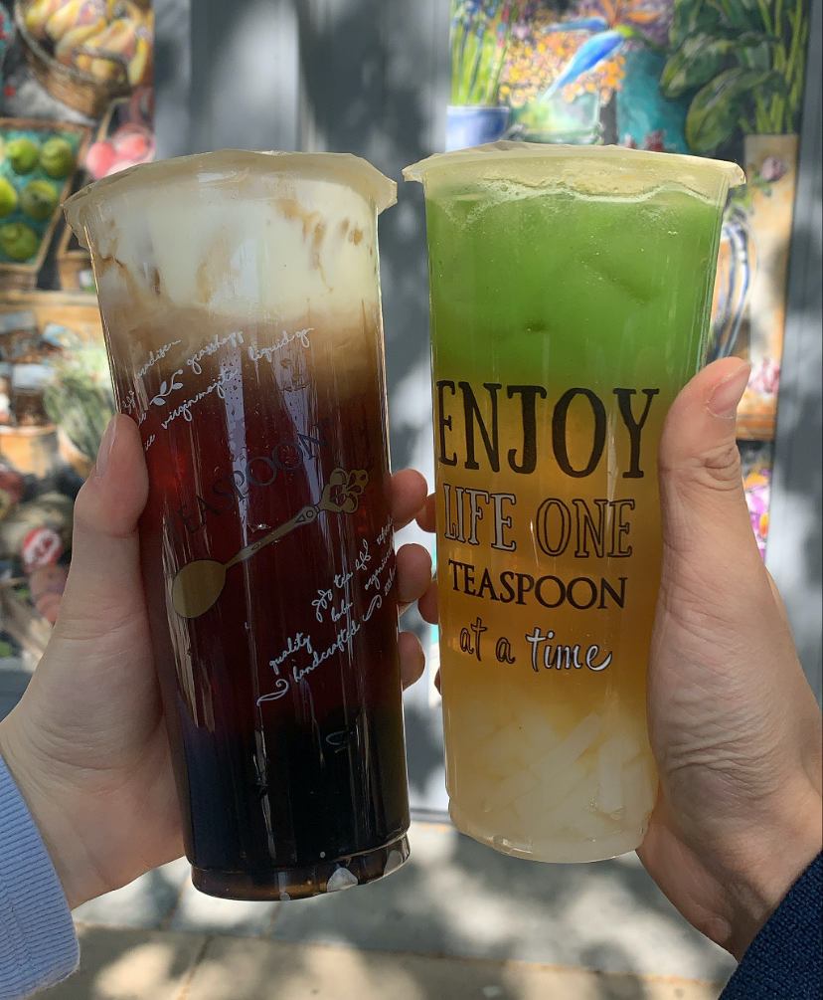

A design for form needs many considerations from different perspectives. Different audiences may experience differently. The color balance and visual elements drive a category of the form. A food survey and a health survey reveal distinct visual perceptions. However, the overall organization and the visual elements of the form could determine the audience's first impression. There are several components that contribute to an effective design form: line proximity, labels, formats, and field size, etc.
A good form design considers its usability and its interactive experience. Most people have the experience to fill out a form and they have the assessment as a user. I think a form should have a directional leading layout that easily directs the audience to a right place for filling each part of information. The line spacing and text hierarchy are some of the considerations that define a user experience. A clear formatted form will make an easier and a relaxed interactive experience. There are many other visual elements that need to be considered and I believe receiving feedback from user experience could be a good opportunity to improve my designed form.
In the article “Best Practice for Modal’, the author Naema Baskanderi demonstrates how interface affect interactive experience from the user's perspective. An overlay window could distract or attract the user's attention. I think it is important to make coherency between the overlay window with the theme of the main window. An overlay window could popup for sign in or enter user’s information. An immersive window design could attract attention and extend the design environment.
When an overlay window shows up randomly, it may disrupt the user's browsing experience and may impact users to exit the main window. As Baskanderi mentions, a cancellation button or a close button play an important role for users to have the choice to exit. The goal for a button is to guide the user and respond explicitly to the user's options. The context of the button should not be equivocal and it should easily tell the next action.
In the article, Gonchar introduces captivating photos that absorb the audience’s attention. Photos could drive curiosity and lead the audience to ask a question spontaneously. I think there are several categories of photos that could catch the audience’s eye: aesthetical framing, heartrending moments, or novel objects, etc. I think photos create interaction and also build connections to a certain community. An intriguing photo could be some details that evoke resonance. The resonance includes the sense of familiarity, curiosity, or approbation.
Gonchar mentions adapting questions for all objects “what’s going on in this picture?”. I notice a way to practice the photo with a sense of questioning is to guide the audience to consider their own perspective and recognition. It could be knowledge-expanding and aesthetical shocking. Different photos bring different visualization according to the audience’s perspective. I think the audience’s visual thinking is mainly determined by his or her recognition environment and visual engagement.
This photo was taken during the nighttime. My roommate was wearing pajamas and I got the idea of taking in black and white to increase the sense of atmosphere. I used the sunflower as a prop to increase some visual interests. I think a self-portrait contains characteristics from facial expressions. This is an interesting photo because the facial features could be absorbed by the audience differently. The audience may read the facial expression in a different way.
The topic for this project will be based on my photography collection. The photo was taken this quarter and I think it is an interesting self-portrait I have taken recently. I want to collect any meaningful and interesting photography in this project. The photography could tell lots of about me. I enjoy photography and I am taking a photography class this quarter. This photo is from one of the projects in my class. Among the categories of photography, taking portraits is part of reason I love photography.
The image is about the drink called “Teaspoon”. I think there is some information included in this image. I believe there are many “Teaspoon” locations and Cody went there to enjoy drinks from one of the locations. The location might be representative that Cody really likes to go.
The most interesting aspect of this image is the capturing moment with his friend holding the drinks together. I think this is a such memorable moment to record the drink, the place, and the person who you drink with. I feel curious about the taste of this drink and what flavor is it. I realized “Teaspoon” is actually located in Davis and I have never tried it before. The image provides me thought of someday I can go to the place Cody went.